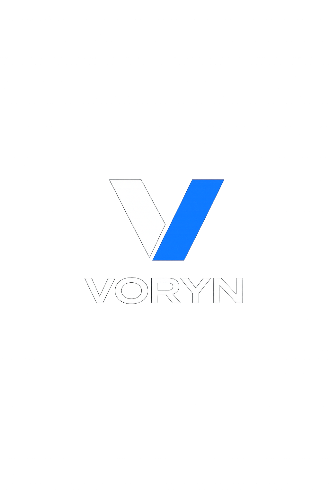

Sobre a VORYN

A VORYN é uma empresa dedicada ao desenvolvimento de soluções digitais, produtos e projetos que unem tecnologia, inovação e empreendedorismo. Nosso propósito é transformar ideias em oportunidades e oportunidades em resultados, criando impacto positivo por meio da criatividade e da tecnologia.
Nossa História
A VORYN nasceu de uma iniciativa dedicada aos estudos, ao aprendizado contínuo e ao aprimoramento de conhecimentos. Inicialmente, o objetivo era desenvolver habilidades, explorar novas tecnologias e transformar o conhecimento adquirido em experiências práticas.
Com o tempo, surgiu a ideia de ir além dos estudos e criar uma marca própria, capaz de reunir aprendizado, inovação e empreendedorismo em um único propósito. Foi dessa visão que nasceu a VORYN, com a ambição de transformar ideias em oportunidades e oportunidades em resultados.
Os primeiros passos foram dados por meio do desenvolvimento de seu site institucional, que representou o início da construção de sua presença digital. A partir desse projeto, a marca começou a ganhar forma, evoluindo com a criação de sua identidade visual, a definição de sua missão, visão e valores e o planejamento de futuros produtos e serviços digitais.
Atualmente, a VORYN encontra-se em fase de estruturação e desenvolvimento, buscando aprimorar seus projetos, expandir conhecimentos e estabelecer as bases necessárias para sua futura atuação no mercado.
Mais do que uma marca, a VORYN representa uma jornada de evolução contínua, na qual cada aprendizado pode gerar novas ideias, cada ideia pode se transformar em uma oportunidade e cada oportunidade pode abrir caminho para novos resultados.
Build Your Next.
Porque construir o futuro começa com a decisão de dar o próximo passo.
O Significado da VORYN
A marca VORYN representa visão, oportunidade, resultados e evolução contínua.
Missão
Transformar ideias em oportunidades e oportunidades em resultados por meio da tecnologia, educação e inovação.
Visão
Construir um ecossistema de negócios digitais reconhecido pela inovação, qualidade e capacidade de transformar ideias em resultados.
Valores
Inovação, qualidade, transparência, aprendizado contínuo, responsabilidade, evolução e compromisso com resultados.
Objetivo
Criar e expandir marcas, produtos e projetos digitais que conectem tecnologia, educação, inovação e empreendedorismo.
Slogan Oficial
Vision Creates Opportunity.
Opportunity Drives Results.
Results Define Your Next Level.
A visão cria oportunidades.
As oportunidades geram resultados.
Os resultados definem seu próximo nível.